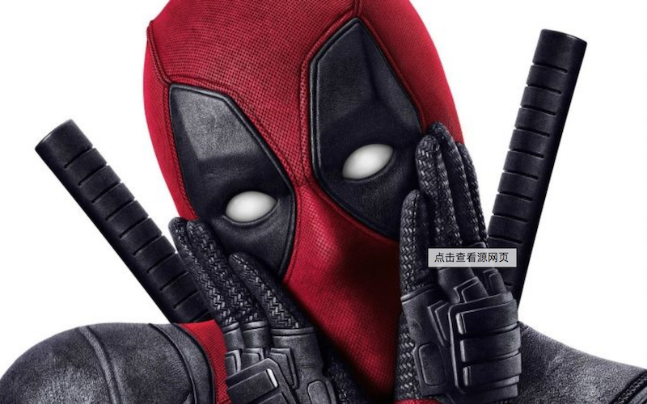

{% extends "base.html" %}

{% block style %}
<link rel="stylesheet" href="static/company.css">
{% end %}

{% block body %}

<!-- 导航 -->
<div class="nav">
    <!--<button class="add" type="button" onclick="test()">添加</button>-->
    <a href="company" class="add">确定</a>
</div>

<div class="add_info">

    <div class="header">
        

        <div class="header_info">
            <h1>公司名称:</h1>
                <input value="漫威漫画公司">
            <h1>外文名称:</h1>
                <input value="Marvel Comics"> <br/>
            <h1>总部地点:</h1>
                <input value="美国-纽约">
            <h1>成立时间:</h1>
                <input value="1939年"> <br/>

            <h1>经营范围:</h1>
                <input value="漫画出版">
            <h1>公司性质:</h1>
                <input value="漫画出版公司"> <br/>
            <h1>母公司　:</h1>
                <input value="华特迪士尼公司">
            <h1>创立者　:</h1>
                <input value="马丁·古德曼"> <br/>

        </div>
        <!--公司名称 漫威漫画公司 外文名称 Marvel Comics 总部地点美国-纽约 成立时间 1939年-->
        <!--经营范围 漫画出版 公司性质 漫画出版公司 母公司华特迪士尼公司 创立者马丁·古德曼-->
    </div>

    <div class="introduction">
        <h1>简介:</h1>

        <textarea>
            漫威漫画公司（Marvel Comics）是美国与DC漫画公司（Detective Comics）齐名的漫画巨头，它创建于1939年，于1961年正式定名为Marvel，旧译为“惊奇漫画”，曾用名“时代漫画”（Timely Comics）、亚特拉斯漫画（Atlas Comics）。[1]
1939年4月，公司在《电影连环画周刊》创刊号上创造出了世界上第一位变种人超级英雄——纳摩，这是MARVEL的第一位超级英雄，他比公司的成立还要早半年，同年10月，公司在《惊奇漫画》第1期上创造出世界上第一位生化人超级英雄——初代霹雳火，并将纳摩引入其中，这水与火的双重合作，打出了MARVEL史上的第一拳。2009年底，MARVEL被华特迪士尼公司以42.4亿美元收购，成为其子公司。2010年9月，MARVEL宣布其正式中文名称为“漫威”。旗下拥有蜘蛛侠、金刚狼、美国队长、钢铁侠、雷神托尔、绿巨人、惊奇队长、死侍、蚁人、黑豹、奇异博士、夜魔侠、惩罚者、杰茜卡·琼斯、卢克·凯奇、铁拳、恶灵骑士、刀锋战士等超级英雄，和复仇者联盟、X战警、神奇四侠、银河护卫队、捍卫者联盟、异人族、光照会等超级英雄团队。[1]
        </textarea>

    </div>

    <!-- -->
    <div class="works">
        <h1>作品:</h1>
    </div>

</div>


<script>

    function test() {
        alert("哈哈！！")
    }

</script>


{% end %}